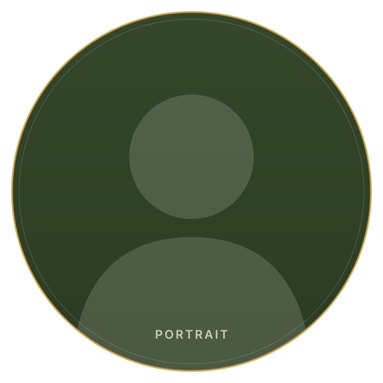

My StoryHow I got here
There's a particular quiet on the farm just after sunrise, before the animals are up and before the phone starts. I didn't grow up with it. I came to it late, and by a strange road.
For years I worked in cannabis. The regulated kind, the legal kind, but the kind of work that doesn't make it into polite conversation. Sales first, then operations, then running the floor and the people on it. I was good at it. I learned how a business actually moves, how money behaves under pressure, and how much of what people call freedom comes down to having the room to make your own choices. Then I walked away.
My dad and I are building twenty-five acres in Lake City, South Carolina. We're learning to farm the way the land wants to be farmed, feeding the soil instead of mining it, watching what comes back when you stop forcing it. Most days I know less than I'd like and more than I did the day before. We write down what we find.
Somewhere in the middle of all this the pieces started fitting together. Land, money, time. They turn out to be the same problem seen from different angles. Soil stripped for a fast yield and a currency that loses weight every year are one story told twice. Both ask you to spend the future to pad the present. Both leave less for whoever comes after. The repair is the same in each case: hold something real, tend it, and pass it on stronger than you found it.
Orenda Commons is where I keep that work. Orenda Pastures is the farm, run on a Bitcoin standard. Orenda Academy is where I teach what we're learning about regenerative agriculture and sound money and the ground where they meet. The Orenda Foundation is the part that gives back: food security, small farmers, the animals. Three organizations, one root.
I'm not finished figuring any of it out. That's part of why I write. If you care about growing your own food, holding your own value, and living a little more on your own terms, you already speak the language. There's room for you here.